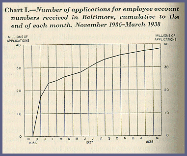
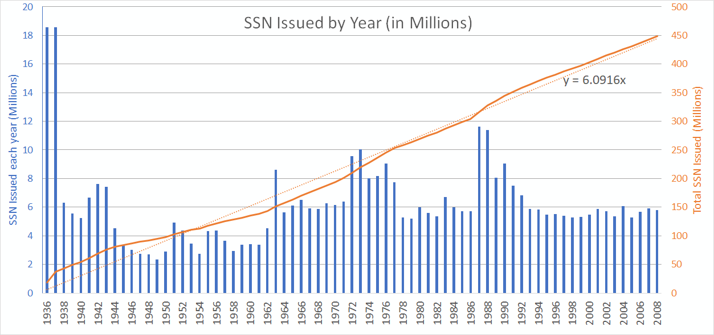

The Graph above
The Blue data [bar] (Y-axis) is the number of SSN's issued in millions, read against the left axis
The Orange data [solid] (Y-axis) is the running total of SSN's issued, read against the right axis
The Year (X-axis) shows the year of each data point.
The Orange FIT [dashed] (Y-axis) is least squares fit (linear) that fits the data to Y=6.0916x read against right axis
The Early years
Starting in 1936-1937 - The Social Security Administration started issuing numbers. Over these first 2 years a significant amount of numbers were issued, approximately 37.1 Million numbers were initially issued. The exact amount issued in each year is unknown, so the total for this first period was divided between these 2 years evenly.
1940's
We see 6-7 Million numbers assigned each year drastically dropping in 1943, soon after the United States entered World War II. Through the remainder of the 1940's the assignments Decline ending in 1949 with just over 2 million assigned that year.
1950's
The 1950's see a dramatic uptick, to over 4 million per year in 1951 and then wavering to around 3 million by 1959.
1960's
Starting the same as the end of the 1950's, we see ae huge uptick in 1963 with 8.6M numbers issued that year. Numbers stay up through the end of the 1960's ending with an average of 6 million issued per year for the last half.
1970's
Starting with almost a direct repeat of the 60's in pattern, we see an upshoot, but this time to 10 Million issued in 1963 which will remain the highest issued (ignoring the start at 1936-1937) until 1987. The decade remains strong until the end where there is a significant drop to around 5.2 million for the last 2 years.
1980's
The decade average 5.8 Million per year until 1987 with 11.6M and 1988 with 11.3M - the highest years in this data set. This decade ends with a strong 8 Million issued in 1989. This incrediable uptick is most likely to the change in policy to do 'enumeration at birth' instead of working age which up to this point, a SSN was issued around the age of 14, or when a person entered the work force.
1990's
The 90's continue the decline at the end of the 80's and drops another 1M in 1990 to 9M issued. This decline continues through the decade ending 1999 with 5.3M issued that year.
2000-2008
With very little fluctuation, the issuing rate in the 2000's is at 5.7M - The same average as 1978-1986.
Average 6.1M per Year
Over the first 72 years of operation, the average amount issued per year can be seen by the dotted orange line in the plot. This fitted line is forced to 0 at the beginning, so in a typical linear equation y=mX+b, or y=aX+b form, the b (zero intercept) is forced to zero and best fit found with slope (m or a depending on the equation you are familiar with) is solved to y=6.0916x. This is y(how many issued that year) = 6.0916million/yr. So on average, over this dataset, about 6.1M are issued per year.
Beyond 2008
The trend in this data shows that if no other major disturbances happen, the actual amount of numbers issued each year will most likely be less than 6.1M. Many other analysis use a rule of thumb of around 5.5M issued per year.